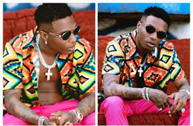
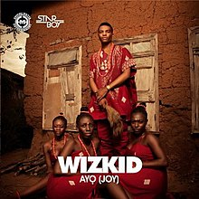
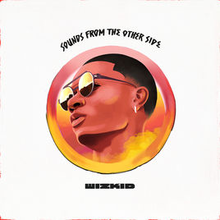
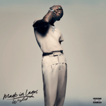

About
This page is dedicated to Nigerian music star, Ayodeji Ibrahim Balogun better known by his millions of fans across the globe as Wizkid. He is no doubt one of Nigeria’s biggest music exports.
The multiple award-winning superstar has not only etched his name on the sands of time as one of the greatest music stars to come out of Africa but it is certain that he is not far from breaking boundaries yet.

10 Fun Facts about Wizkid
1.Born on July 16, 1990, the singer hails from Lagos State and is from a family of six. He is the last child and also the only son.
2.He started singing at the age of eleven under the stage name Lil Prinz. He also formed a group at 11 called Glorious Five. The group later released a 7-track album that was released in the church.
3.His first album was with the Glorious 5 and it sold 10,000 copies.
4.He had his first ever recording with OJB Jezreel at 11.
5.At the age of 15, he was song writing and receiving guidance from Naeto C.
6.In 2006, he changed his name from the moniker Lil Prinz to Wizkid.
7.Before raising to stardom Wizkid was lucky enough to have crossed paths with celebrated artists like 2Face, Idibia, Naeto C, Sound Sultan.
8.His break out single is “Holla At Your Boy” that was released in 2010.
9.In 2011, the musician welcomed his first son, Boluwatife. He currently has three.
10.The singer’s favourite colour is black.
Music Albums
Superstar
 Superstar is the debut studio album by Nigerian singer Wizkid. It was released by Empire Mates Entertainment on June 12, 2011. It is the best selling afrobeat album, selling over five millions copies in 2011-2012.The album's production was handled by Samklef, E-Kelly, Jay Sleek, Shizzi, DJ Klem, Masterkraft, Q-Beats, Banky W and Vebee.It features collaborations with Wande Coal, D'Prince, Banky W and Skales. The album was supported by the singles "Holla at Your Boy", "Tease Me/Bad Guys", "Don't Dull", "Love My Baby", "Pakurumo", and "Oluwa Lo Ni". It is the second best selling album on NotJustOk and was the most highly anticipated Nigerian album of 2011.
Superstar is the debut studio album by Nigerian singer Wizkid. It was released by Empire Mates Entertainment on June 12, 2011. It is the best selling afrobeat album, selling over five millions copies in 2011-2012.The album's production was handled by Samklef, E-Kelly, Jay Sleek, Shizzi, DJ Klem, Masterkraft, Q-Beats, Banky W and Vebee.It features collaborations with Wande Coal, D'Prince, Banky W and Skales. The album was supported by the singles "Holla at Your Boy", "Tease Me/Bad Guys", "Don't Dull", "Love My Baby", "Pakurumo", and "Oluwa Lo Ni". It is the second best selling album on NotJustOk and was the most highly anticipated Nigerian album of 2011.
Ayo
Ayo (Yoruba: Joy) is the self-titled second studio album by Nigerian singer Wizkid. It was released on 17 September 2014, by Starboy Entertainment and Empire Mates Entertainment.The album is the follow-up to his debut album Superstar (2011). Ayo was postponed twice due to difficulty in track selection.Preceding its release were the singles "Jaiye Jaiye", "On Top Your Matter", "One Question", "Joy", "Bombay" and "Show You the Money". The album also contains the song "Ojuelegba". Wizkid enlisted Sarz, Shizzi, Uhuru, Del B, Dokta Frabz, Maleek Berry, Legendury Beatz and Spellz to produce the album.
Sounds From the Other Side
 Sounds from the Other Side (abbreviated as SFTOS) is the third studio album and major label debut by Nigerian singer Wizkid. Described by the singer as an EP, the album contains songs that were recorded between 2014 and 2017.[1] It was released on July 14, 2017, by Starboy Entertainment and RCA Records.
Made In Lagos
Made in Lagos is the fourth studio album by Nigerian singer Wizkid. It was released on 30 October 2020 by Starboy Entertainment and RCA Records. The album features guest appearances from Burna Boy, Skepta, H.E.R., Ella Mai, Tay Iwar, Projexx, Tems, Damian Marley, Terri and was executive produced by P2J. The deluxe edition was released on 27 August 2021. It features additional guest appearances from Buju and Justin Bieber
Notable Awards
1. MTV Europe Music Award for Best African Act 2021
2. 2016 BET Award for Best International Act: Africa
3. The Headies Award for Artiste of the Year 2021
4. 2016 Grammy Award for Best Music Video
5. 2021 · BROWN SKIN GIRL
6. The Headies Award for Best Collabo 2018 · Ma Lo
7. BET Award for Best Collaboration 2022 · Essence
8. NAACP Image Award for Outstanding Duo or Group 2020 · BROWN SKIN GIRL
9. MTV Video Music Award for Best Cinematography 2021 · BROWN SKIN GIRL
10.Soul Train Music Award for Best Collaboration 2021 · Essence
11.Echo Award for Song of the Year 2017 · One Dance
12.Billboard Music Award for Top R&B Song